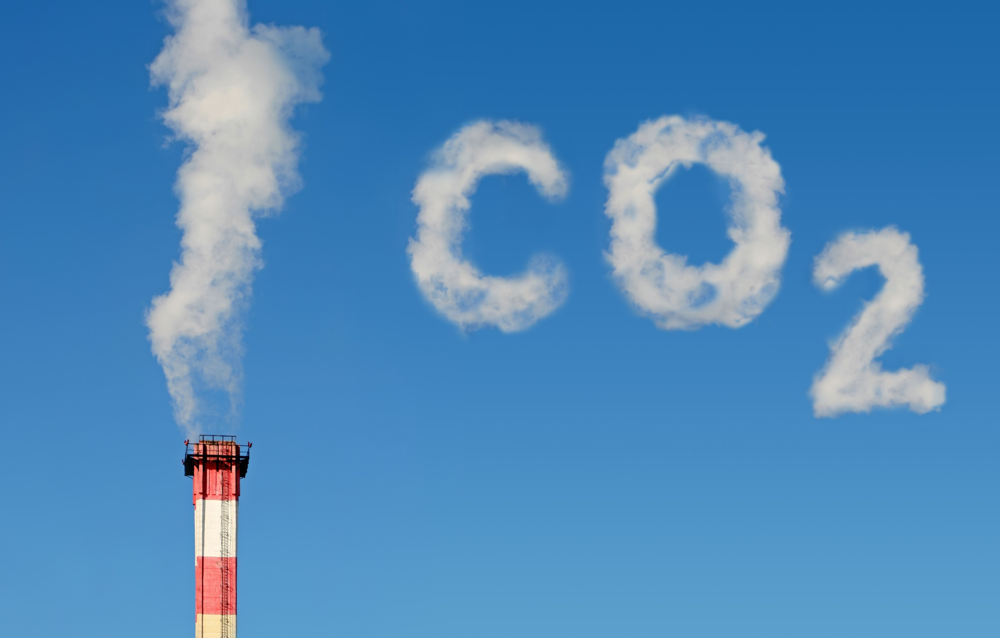

Aquecimento global: Como dito anteriormente, as ações das indústrias
causam uma reação em cadeia, em que uma coisa leva a outra e todas nos
trazem até aqui, ao aquecimento global. As atividades industriais
duplicaram a concentração de GEE (Gases do Efeito Estufa) na atmosfera,
com o principal gás sendo o dióxido de carbono, porém além desses ainda
são emitidas grandes quantidades de gás metano, óxido nitroso e óxidos
de nitrogênio. É importante salientar que a indústria não é apenas o
local físico de uma fábrica, mas todo o processo que as envolvem,
portanto, todo o CO2 despejado por carros e caminhões a serviço desse
ciclo entram nessa conta. Todos os impactos citados anteriormente
acarretam nesse “super impacto”, que provoca mudanças climáticas graves,
aumento do nível do mar, derretimento de calotas polares, desertificação
de áreas de florestas, aumento da temperatura e diversos outros
problemas. Um exemplo recente do aquecimento global é a precipitação de
neve nas regiões sul do Brasil, um ponto importante de se destacar, pois
apesar do nome, o aquecimento global não é responsável apenas por altas
temperaturas mas sim por um desequilíbrio nelas.
